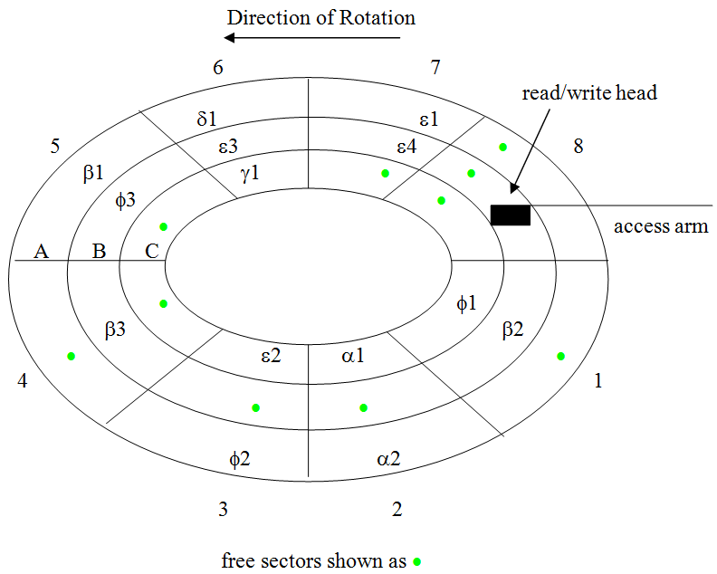
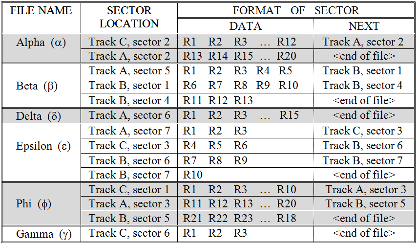
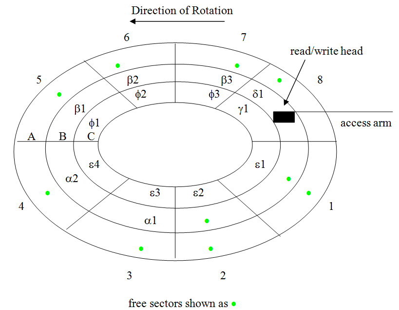
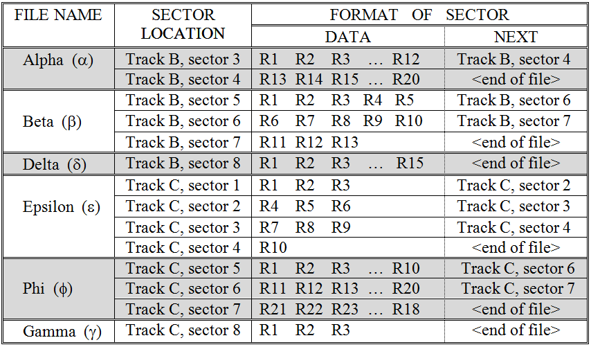
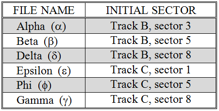

Linked storage overcomes the disadvantage of contiguous storage by doing away with the need to place logically adjacent file blocks in physically adjacent sectors. To accomplish this, Linked storage places two things in each sector: (1) a block of records, and (2) the track and sector number of the sector containing the “next” block of records. Thus a sector not only contains records to be read, but also information on where the next block of records may be found. Because the location of the next sector is stored in the current sector, there is no need for the sectors of a file to be physically located next to each other. Hence, the contents of a file may be spread across many tracks and sectors
The process of reading a linked file involves accessing the file’s first sector by moving the access arm to the proper track and then waiting for the appropriate sector to rotate under the read/write head. That sector is then retrieved yielding a block of records and the track and sector location of the next block. If the next sector is on a different track, the access arm will position the read write head over that track. Regardless of whether or not switching tracks is necessary; the drive unit must wait for the correct sector to rotate beneath the head. The second sector is then read and this process repeats itself until the entire file has been accessed. The last sector of a linked file will have a special tag in its next field indicating that the end of file has been reached.
illustrates a collection of six files stored via the linked method. Each file is composed of one or more sectors, where each sector contains a block of one or more records together with the address of the next sector. For example, file Alpha requires two sectors. The first sector, sector two of track C, holds a block of 12 records and the address of the sector storing the next block of the file. The second sector, sector two of track A, holds 8 records. The area that would normally point to the next sector of the file contains the “end of file” indicator.
Notice that the number of records stored per sector varies from file to file. The reason for this is that the sizes of records differ from one file to another while the sector size is fixed for a particular disk drive. If it seems odd that record sizes vary, remember that record size is determined by the amount of data the file’s creator decided to store per item. An employee record is unlikely to be the same size as a student record, which is probably not the same size as a credit card record.
 A collection of linked files stored on a disk
As stated above, the primary advantage of the linked file representation is that it uses space efficiently. Linked storage allows us to make use of all of the sectors of a drive. It would be quite easy to add a three, five, or even 10 sector file to the disk of – without the need to perform a costly defragmentation operation. Of course, it is true that there is some overhead associated with devoting a portion of each sector to storing the address of the “next” sector, but this overhead is very small. In fact, for the simple three track, eight sector disk we are using in our illustration, a single byte (character) per sector would be more than sufficient.[1]
The major disadvantage of linked storage is that the time to retrieve a file can be significantly greater than what is required under contiguous storage. The reason is that seek time (to move the access arm) and rotational latency (to wait for the sector to rotate over to the read/write head) may be experienced for each sector of the file, rather than for just the first sector – as was the case with contiguous storage.
While defragging a disk, in order to make space to store a file, is not necessary under linked storage, the defragmentation operation can still be performed occasionally to speed up file retrieval time. This is because in addition to grouping all of the free sectors of a disk together, defragging linked files involves placing the individual sectors of the files into contiguous locations and updating their “next sector” pointers. After defragging a disk, each of the sectors of a file will point to the very next physical sector.[2] In this case, retrieval of a linked file can take place just a quickly as retrieval of a contiguous file. Of course, as files are added, modified, and deleted, the disk will slowly become fragmented again – resulting in increasing file retrieval times – until another defrag operation is performed.
shows the contents of a collection of linked files after defragging. This figure is very similar to , which illustrated defragging contiguous files. A careful inspection of the two figures will show that after defragging the files are “contiguous” in both cases, yet they are not located in exactly the same sectors. The figures were drawn this way in order to illustrate that there is nothing special about which sectors contain the files. Any sectors will do, as long as they are physically adjacent to one another.
Before leaving the topic of linked files, one additional question needs to be addressed: how is the first sector of each file determined? As we have seen, once the disk drive begins reading a linked file, the current sector will always contain the location of the next sector of the file. But this leaves open the question of how the initial sector is located in the first place. Somehow the system must know where each file begins. Furthermore, this is true regardless of whether the file is linked or contiguous.
 A collection of linked files after defragging
A Root Directory Table for the files of
This problem is usually resolved by having a special location on the disk (such as Track A, Sector 1) set aside to hold a Root Directory. The Root Directory is a table that records the name and initial sector of every file that resides on a disk. This table is often loaded into the computer’s memory (RAM) when the machine is booted or the disk is first accessed. Given this table, it is a simple matter to retrieve any file since its initial track and sector are known. presents a root directory table that could be used for the disk of .[3]
As an interesting side note, you may have heard that sometimes files can be recovered even after they have been “deleted” from a disk. The reason for this is that when an operating system erases a file, it deletes the file’s entry from the root directory and marks as “free” the sectors that had been devoted to storing the file. This is done in order to save time. It is much easier (and hence faster) to simply change one entry in a table, rather than overwriting the contents of every block of a file with “blanks”, or some other character. Data recovery programs scan through the entire disk a sector at a time retrieving the data stored in sectors that have been marked “free”. In order to truly delete sensitive data, a disk drive should be reformatted and overwritten with new data.
Footnotes
[1] A byte is eight bits. Two of these bits could be used to indicate which track: 00 for A, 01 for B, and 10 for C. Four bits could be used to represent the sector number as a standard binary number. Binary numbers are discussed in detail in .
[2] Except, of course, for the very last sector of each file which will still contain an “end of file” indicator.
[3] Note that in reality the root directory is just one part of an overall file system, such as FAT32 or NTFS, that serves to organize the disk in order to enable file access and manage space that has not yet been allocated.